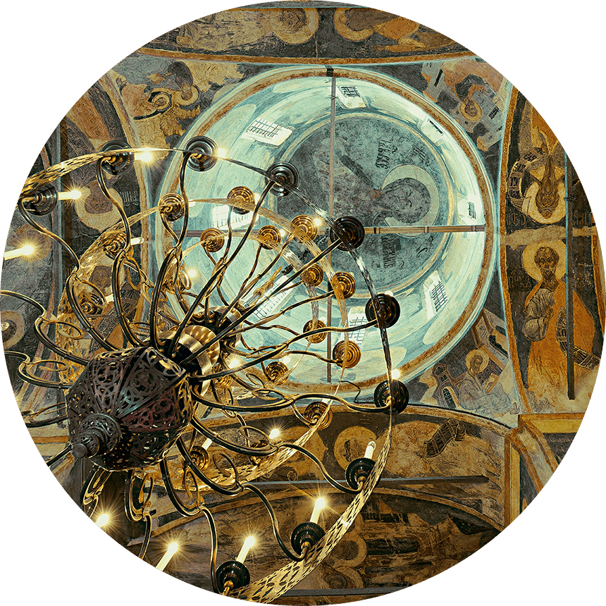

<p id="Header0">МУЗЕЙНЫЙ ГИД</p>
<p style="top: 50px;">Ярославские храмы</p>
<p style="top: 100px;">XVI — XVII веков,</p>
<p style="top: 150px;">филиалы Ярославского</p>
<p style="top: 200px;">музея—заповедника</p>

